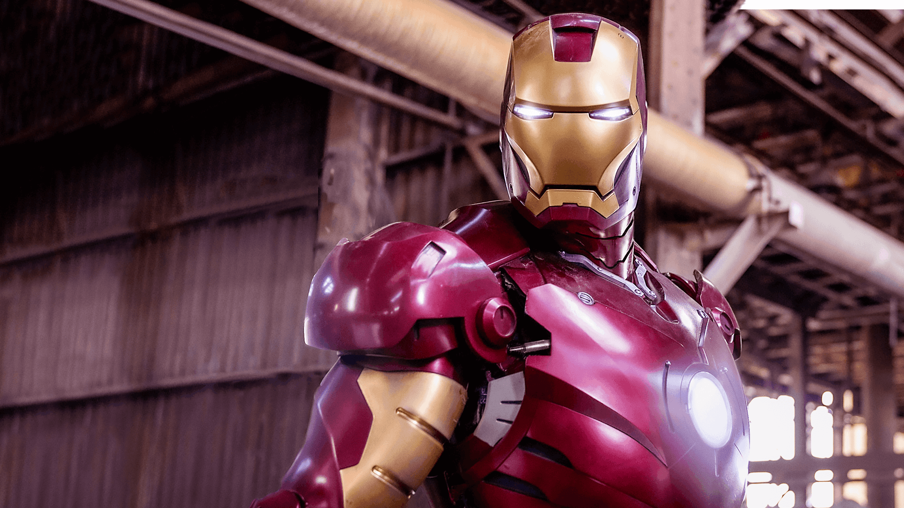
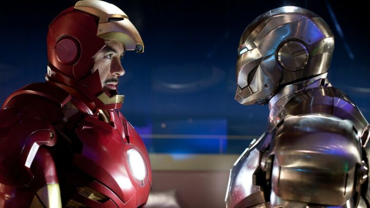
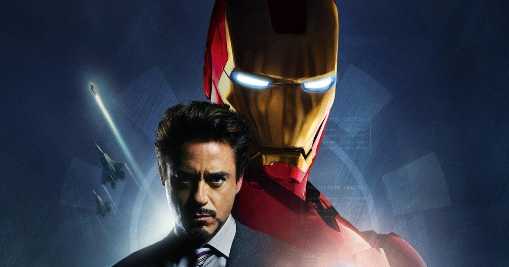
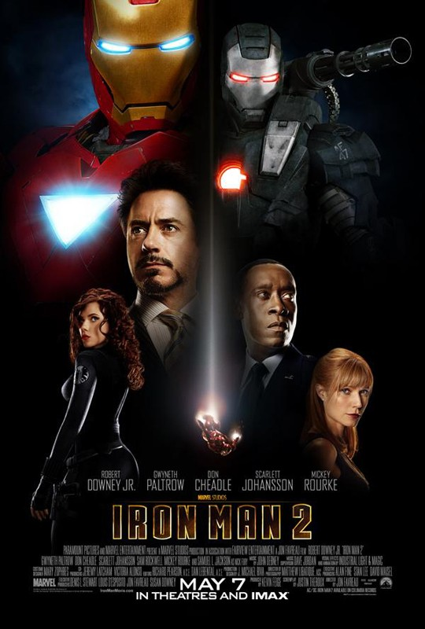
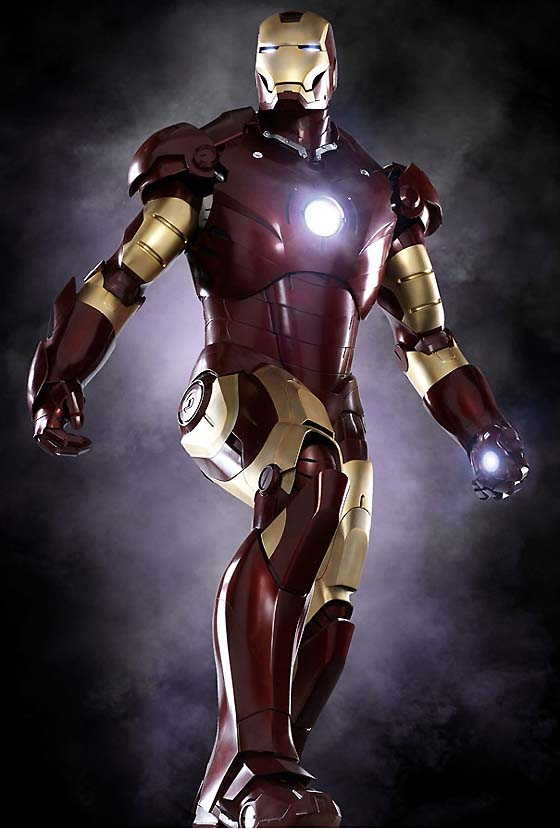
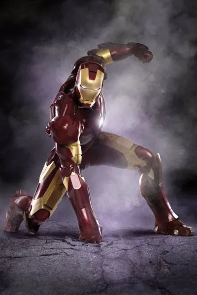
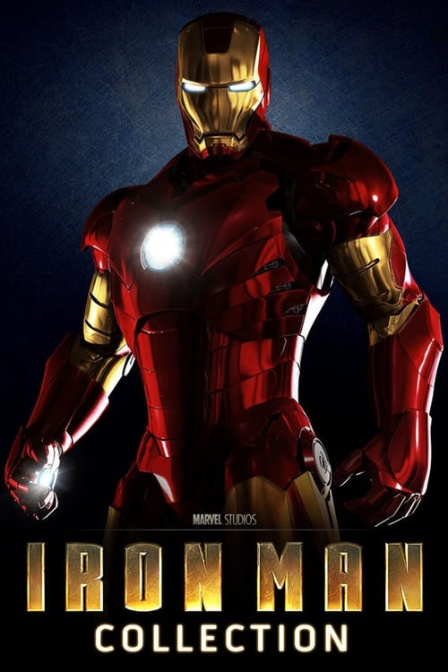
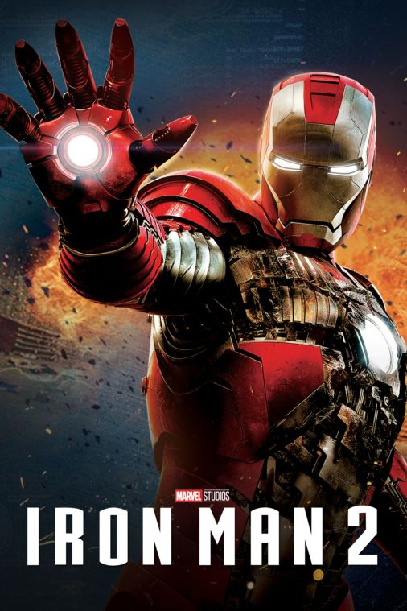
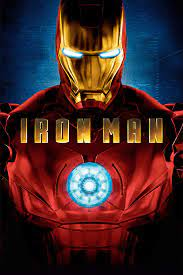

Les Photos d'Iron man !
Photos 16/9em




Les portraits






| Produit | Prix | Quantité disponible |
|---|---|---|
| Figurine | 55€ | 8 |
| Nounours | 35€ | 12 |
| Lampe de nuit | 23€ | 18 |